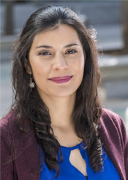

Sandra Céspedes U.
Department of Electrical Engineering
Universidad de Chile
Av. Tupper 2007, Of. 504
Santiago, Chile. 8370451
E-mail: scespedes [at] ing.uchile.cl
Phone: +56-2-29784093

Background
Sandra Céspedes is an Assistant Professor with the Department of Electrical Engineering and the head of the Wireless Networking Research Group (WiNet), Universidad de Chile, Santiago, Chile. She received her B.Eng. and Specialization degrees in Telematics Engineering, and Management of Information Systems, from Universidad Icesi, Colombia, and a Ph.D. in Electrical and Computer Engineering from the University of Waterloo, Canada.
She is also a Researcher with the NIC Chile Research Labs and an Associated Researcher with the AC3E. Sandra is an ISOC Returning Fellow for participation and dissemination of the standardization activities at the IETF. Her research focuses on the topics of vehicular communications systems and networking, cyber-physical systems, smart grid communications, and routing and protocols design for the Internet of Things.

Sandra Céspedes es Ingeniera Telemática (Magna Cum Laude) y especialista en Gerencia de Informática Organizacional, ambos títulos obtenidos en la Universidad Icesi, Colombia, en 2003 y 2007 respectivamente. Doctora en Electrical and Computer Engineering de la Universidad de Waterloo, Canadá en 2012. A partir de 2014 es Profesora Asistente en el Departamento de Ingeniería Eléctrica de la Universidad de Chile, donde dirige el grupo de investigación en Wireless Networking (WiNeT) y participa como investigadora en el NIC Chile Research Labs y en el Centro Avanzado de Ingeniería Eléctrica y Electrónica (AC3E). Ha sido también nombrada Profesora Adjunta Honoraria de la Universidad Icesi.
En la actualidad sirve además como Editora Asociada del IEEE Internet of Things Journal y del IEEE Vehicular Technology Magazine y es revisora de múltiples journals, entre ellos IEEE Transactions in Intelligent Transportation Systems, IEEE Transactions in Mobile Computing, IEEE Communications Magazine, entre otros. Sandra es IEEE Senior Member desde 2017. Además es Fellow de la Internet Society para participar en las reuniones de estandarización de la Fuerza de Trabajo de Internet (IETF). Sus áreas de interés en investigación incluyen redes y sistemas de comunicación vehiculares, sistemas ciber-físicos, comunicaciones en Smart Grid y diseño de protocolos y enrutamiento para la Internet de las Cosas.

Publications
2020
- Bolufé, C. A. Azurdia-Meza, S. Céspedes, S. Montejo-Sánchez, R. D. Souza and E. M. G. Fernandez, "POSACC: Position-Accuracy Based Adaptive Beaconing Algorithm for Cooperative Vehicular Safety Systems," IEEE Access, vol. 8, pp. 15484-15501, 2020. DOI: 10.1109/ACCESS.2020.2967283
- Serban, S. Céspedes, C. Marinescu, C. A. Azurdia-Meza, J. S. Gómez and D. Sáez, "Communication Requirements in Microgrids: A Practical Survey," in IEEE Access, vol. 8, pp. 47694-47712, 2020. DOI: 10.1109/ACCESS.2020.2977928
- Inga, R. Hincapié, and S. Céspedes, “Capacitated Multicommodity Flow Problem for Heterogeneous Smart Electricity Metering Communications Using Column Generation,” Energies, vol. 13, no. 1, p. 97, 2020. DOI: 10.3390/en13010097
2019
- Yáñez, S. Céspedes, J. Rubio-Loyola, “A Baseline for Context-aware Safety Messages Dissemination in VANETs,” in Revista Facultad de Ingeniería Universidad de Antioquia, n. 93, pp. 9-18, Dec 2019. DOI: 10.17533/10.17533/udea.redin.20190402
- Arteaga, S. Céspedes, C. Azurdia-Meza, “Vehicular communications over TV White Spaces in the presence of Secondary Users," IEEE Access, vol. 7, pp. 53496-53508, Apr 2019. DOI: 10.1109/ACCESS.2019.2912144
- Ferrer, S. Céspedes, A. Becerra, “Review and Evaluation of MAC Protocols for Satellite IoT Systems Using Nanosatellites,” Sensors, vol. 19, no. 8, p. 1947, Apr. 2019. DOI: 10.3390/s19040000
2018
- Céspedes, J. Salamanca, A. Yáñez, D. Vinasco, “Group Cycling meets Technology: A Cooperative Cycling Cyber-physical System,” IEEE Transactions on Intelligent Transportation Systems, vol. 20, no. 8, pp. 3178-3188, Dec 2018. DOI: 10.1109/TITS.2018.2874394
2017
- Inga. S. Céspedes, R. Hincapié, C. A. Cárdenas, “Scalable Route Map for Advanced Metering Infrastructure Based on Optimal Routing of Wireless Heterogeneous Networks,” IEEE Wireless Communications, vol.24, no.2, pp.26-33, April 2017. DOI: 10.1109/MWC.2017.1600255
2015
- Estévez, C. Azurdia, S. Céspedes. "Overcoming Intrinsic Losses With a Physical-Transport Cross-Layer Control System for Low-SNR Links,” IEEE Communications Letters, vol.19, no.12, pp.2094-2097, Dec 2015. DOI: 10.1109/LCOMM.2015.2490672
- Céspedes, X. (Sherman) Shen. "On Achieving Seamless IP Communications in Heterogeneous Vehicular Networks,” IEEE Transactions on Intelligent Transportation Systems, vo.16, no.6, pp.3223-3237, Dec 2015. DOI: 10.1109/TITS.2015.2442251
- Orozco, S. Céspedes, R. Michoud, and G. Llano. "Design and Simulation of a Collision Notification Application with Geocast Routing for Car-to-Car Communications," European Transport Research Review, vol.7 (4), p.36, Oct 2015. DOI: 10.1007/s12544-015-0185-1
- F. Ramírez, S. Céspedes, “Routing in Neighborhood Area Networks: A Survey in the Context of AMI Communications,” Journal of Network and Computer Applications, vol.55, pp.68-80, September 2015. DOI: 10.1016/j.jnca.2015.04.011
Before 2015
- Céspedes, N. Lu, X. (Sherman) Shen. “VIP-WAVE: On the Feasibility of IP Communications in 802.11p Vehicular Networks,” IEEE Transactions on Intelligent Transport Systems, vol.14, no.1, pp.82-97, March 2013. DOI: 10.1109/TITS.2012.2206387
- Céspedes, S. Taha, X. (Sherman) Shen. “A Multi-hop Authenticated Proxy Mobile IP Scheme for Asymmetric VANET,” IEEE Transactions on Vehicular Technology, vol.62, no.7, pp.3271-3286. September 2013. DOI: 10.1109/TVT.2013.2252931
- Céspedes, X. (Sherman) Shen, C. Lazo. “IP Mobility Management for Vehicular Communication Networks: Challenges and Solutions,” IEEE Communications Magazine - [Topics in automotive networking], vol.49, no.5, pp.187-194, May 2011. DOI: 10.1109/MCOM.2011.5762817
- Céspedes, “Network-Layer Mobility Management”, in Encyclopedia of Wireless Networks. Springer International Publishing, Cham. Pages 1-14. 2018. DOI: 10.1007/978-3-319-32903-1_11-1
- Estévez, C. Azurdia, S. Céspedes, “The Internet of Interlaced Cyber-physical Things”, in book Cyber Physical Systems: From Theory to Practice. Auerbach Publications, CRC Press, Taylor & Francis Group, USA. Pages 343-372. 2015.
- Taha, S. Céspedes, X. (Sherman) Shen. “Mutual Authentication in IP Mobility-enabled Multihop Wireless Networks” in book Security for Multihop Wireless Networks. Auerbach Publications, CRC Press, Taylor & Francis Group, USA. Pages 101-124. 2014.
- Céspedes and Z. Solarte. “Design and development of the monitor component” in book Universal system for portability on mobile devices between heterogeneous wireless networks [In Spanish]. Universidad Autónoma de Colombia. Pages 95-123. 2008
- Lazo, R. Glocker, S. Céspedes and M. Veiga. “Traffic Flow Analysis over an IPv6 Hybrid MANET” in book Innovative Algorithms and Techniques in Automation, Industrial, Electronics and Telecommunications v2. Springer Netherlands. Pages 95-100. 2007
- Herberg, A. Cardenas, T. Iwao., M. Dow, S. Céspedes, “Depth-First Forwarding in Unreliable Networks”, IETF RFC 6971. June 2013
- Jeong, S. Cespedes, N. Benamar, J. Haerri, “IPv6 Wireless Access in Vehicular Environments (IPWAVE): Problem Statement and Use Cases” (work in progress), available: https://datatracker.ietf.org/doc/draft-ietf-ipwave-vehicular-networking/ , Jul 2020
- Jeong, Y. Shen, Z. Xiang, S. Cespedes, “Vehicular Neighbor Discovery for IP-Based Vehicular Networks” (work in progress), available: https://datatracker.ietf.org/doc/draft-jeong-ipwave-vehicular-neighbor-discovery/ , May 2020
- Montenegro, S. Cespedes, S. Loreto, R. Simpson, “HTTP/2 Configuration Profile for the Internet of Things”, Internet-draft (work in progress), available: https://datatracker.ietf.org/doc/draft-montenegro-httpbis-h2ot-profile/?include_text=1 , March 2017
- Montenegro, S. Cespedes, S. Loreto, R. Simpson, “H2oT: HTTP/2 for the Internet of Things”, Internet-draft (work in progress), available: https://tools.ietf.org/html/draft-montenegro-httpbis-h2ot-00, July 2016
2020
- Arteaga, P. Palacios Játiva, S. Céspedes, C. Azurdia-Meza, “Evaluation of Opportunistic Access Strategies for Vehicular Networking Over TVWS”, in Proc. 2020 IEEE 92nd Vehicular Technology Conference (VTC-Fall 2020), Victoria, BC Canada, Oct 2020.
- Ortega, S. Céspedes, S. Montejo-Sanchez, “Increasing Safety at Vehicular Intersections with a Controlled Retransmission of Beacons”, in Proc. 2020 IEEE Colombian Conference on Communications and Computing (COLCOM), Cali, Colombia, Aug 2020.
- Londoño, S. Céspedes, J. Bustos, “Analysis and Evaluation of HTTP/2 Flow Control Algorithm for IoT”, in Proc. 2020 IEEE Colombian Conference on Communications and Computing (COLCOM), Cali, Colombia, Aug 2020
- Ortiz-Guerra, M. Otero Rojas, S. Montejo-Sanchez, R.Demo Souza, C. Azurdia-Meza, S. Céspedes, “On MAC Protocols Performance for M2M Communications”, in Proc. 2020 IEEE Colombian Conference on Communications and Computing (COLCOM), Cali, Colombia, Aug 2020.
2019
- Lara, O. Cartagena, S. Céspedes, D. Sáez, “Robust Model Based Predictive Control for a Cooperative Cycling Cyber-physical System”, Proc. 2019 IEEE CHILEAN Conference on Electrical, Electronics Engineering, Information and Communication Technologies (CHILECON), Valparaiso, Chile, 2019, pp. 1-6.
- M. Lara, S. Céspedes and A. Hafid, "Understanding and Characterizing Transmission Times for Compressed IP packets over LoRaWAN," 2019 IEEE Latin-American Conference on Communications (LATINCOM), Salvador, Brazil, pp. 1-6., Nov 2019.
- P. Játiva, C. A. Azurdia-Meza, M. R. Cañizares, S. Céspedes, and S. Montejo-Sánchez, "Performance Enhancement of VLC-Based Systems Using Diversity Combining Schemes in the Receiver," 2019 IEEE Latin-American Conference on Communications (LATINCOM), Salvador, Brazil, pp. 1-6., Nov 2019.
- A. Fraire, S. Céspedes, N. Accettura, “Direct-To-Satellite IoT - A Survey of the State of the Art and Future Research Perspectives.” in Ad-Hoc, Mobile, and Wireless Networks. ADHOC-NOW 2019. Lecture Notes in Computer Science, Palattella M., Scanzio S., Coleri Ergen S. (eds), vol 11803. Springer, Cham, Sep 2019.
- Kang, S. Montejo-Sánchez, C. A. Azurdia-Meza and S. Céspedes, "Beamforming for Beaconing in V2V Communications," 2019 IEEE XXVI International Conference on Electronics, Electrical Engineering and Computing (INTERCON), Lima, Peru, pp. 1-4. Aug 2019.
- Torres, S. Céspedes, J. Bustos-Jiménez, M. Serrano, “IoT solutions for Sustainable Cities: An Online Adaptation for the Driver Intent Inference Algorithm”, in Proc. IEEE 5th World Forum on Internet of Things, Limerick, Ireland, April 2019.
2018
- Ortega, S. Bolufé, S. Céspedes, C.A. Azurdia-Meza, S. Montejo, F. Maciel-Barboza. “Connectivity improvement in urban intersections obstructed by buildings using RSUs”, in (2018) CEUR Workshop Proceedings, IV School on Systems and Networks, SSN 2018, 2178, Pucón, Chile, Oct 2018.
- Ferrer, S. Céspedes, A. Becerra. “Evaluation of MAC protocols for IoT satellite systems”, in (2018) CEUR Workshop Proceedings, IV School on Systems and Networks, SSN 2018, 2178 Pucón, Chile, Oct 2018.
- Lara, A. Arteaga, S. Céspedes. “Comparison of path loss models for vehicular communications in TV white spaces” ”, in (2018) CEUR Workshop Proceedings, IV School on Systems and Networks, SSN 2018, 2178, Pucón, Chile, Oct 2018.
- Sánchez, S. Céspedes. “Proposal for an intelligent distribution model of DNS queries according to time zones”, in (2018) CEUR Workshop Proceedings, IV School on Systems and Networks, SSN 2018, 2178, Pucón, Chile, Oct 2018..
- Torres, S. Céspedes, “Proposal for architecture and simulated implementation of an early warning system for cyclists based on an algorithm of right turn predictions of vehicles”, in (2018) CEUR Workshop Proceedings, IV School on Systems and Networks, SSN 2018. 2178, Pucón, Chile, Oct 2018.
- Arteaga, S. Céspedes and C. Azurdia-Meza, "Next generation vehicular communications via interworking of DSRC and TV White Space," in Proc. 2018 18th International Symposium on Antenna Technology and Applied Electromagnetics (ANTEM), Waterloo, ON, Aug 2018, pp. 1-2.
- Matus, C. A. Azurdia-Meza, S. Céspedes, P. Ortega, S. Montejo-Sánchez, J. Rojas, and I. Soto, “Implementation of a Low-Cost Vehicular VLC System and CAN Bus Interface,” in Proc. 2018 11th IEEE/IET International Symposium on Communication Systems, Networks & Digital Signal Processing (CSNDSP) – 6th Colloquium on Optical Wireless Communications, Budapest, Hungary, Jul 2018.
- Inga, M. Campaña, R. Hincapié, S. Céspedes, “Optimal Placement of Data Aggregation Points for Smart Metering using Wireless Heterogeneous Networks”, in Proc. 2018 IEEE Colombian Conference on Communications and Computing (COLCOM), Medellin, Colombia, May 2018.
- S. Sánchez-Mahecha, S. Céspedes, J. Bustos-Jiménez, “QoS Evaluation of the Future High Efficiency IEEE 802.11ax WLAN Standard”, in Proc. 2018 IEEE Colombian Conference on Communications and Computing (COLCOM), Medellin, Colombia, May 2018.
- Yáñez, S. Céspedes, and J. Rubio, “CASSaM: Context-aware System for Safety Messages Dissemination in VANETs”, in Proc. 2018 IEEE Colombian Conference on Communications and Computing (COLCOM), Medellin, Colombia, May 2018.
- Bolufé, C. A. Azurdia-Meza, S. Céspedes, S. Montejo-Sanchez, R. Demo Souza, E. M. G. Fernandez, and C. Estevez, “Dynamic Beaconing using Probability Density Functions in Cooperative Vehicular Networks,” in Proc. 4th International Conference on Vehicle Technology and Intelligent Transport Systems (VEHITS), Funchal, Madeira, Portugal, Mar 2018.
- Bolufé, S. Montejo-Sánchez,C. A. Azurdia-Meza, S. Céspedes, R. Demos Souza, and E. M. García, “Dynamic Control of Beacon Transmission Rate and Power with Position Error Constraint in Cooperative Vehicular Networks,” in Proc. 33rd ACM/SIGAPP Symposium On Applied Computing (SAC), Pau, France, Apr 2018.
- Ortega, S. Céspedes, S. Bolufé, and C. Azurdia, “Experimental Evaluation of Adaptive Beaconing for Vehicular Communications,” in Proc. 6thInternational Workshop on ADVANCEs in ICT Infrastructures and Services, Santiago, Chile, Jan 2018.
2017
- Montejo-Sánchez, C. Azurdia-Meza, S. Bolufé, S. Céspedes, I. Soto, and R. Demo Souza, “Novel Channel Hopping Sequence Approaches to Rendezvous for VANETs”, in Proc. 2017 IEEE CHILEAN Conference on Electrical, Electronics Engineering, Information and Communication Technologies (CHILECON), Pucón, Chile, Oct 2017.
- Londoño, M. González, S. Céspedes, J. Bustos, G. Montenegro, “Performance Evaluation of HTTP/2 Window Size in the Internet of Things”, in Proc. III Spring School on Networks 2017, Pucón, Chile, Oct 2017.
- Gonzalez Mendoza, B. Holloway, A. Hevia, S. Céspedes and J. Bustos, “Coordination of Autonomous Vehicles at Intersections with V2V (decentralized) communication”, in Proc. III Spring School on Networks 2017, Pucón, Chile, Oct 2017.
- Bolufé, S. Montejo-Sánchez, C. Azurdia-Meza, S. Céspedes, R. Demo Souza, and Martin Garcia Fernandez, “Dynamic Control of Beacon Transmission Rate with Position Accuracy in Vehicular Networks”, in Proc. III Spring School on Networks 2017, Pucón, Chile, Oct 2017.
- Yáñez, S. Céspedes, and J. Rubio, “Towards a Context-aware Dissemination Mechanism for Vehicular Networks”, in Proc. III Spring School on Networks 2017, Pucón, Chile, Oct 2017.
- Salamanca, S. Céspedes, L. Rivera, F. Camacho, "Urban Cycling Platoons Syncing Traffic Infrastructure", in Proc. 23rd International Sustainable Development Research Society Conference. Bogota, Colombia, Jun 2017
2016
- Salamanca, S. Céspedes, D. Vinasco, and A. Yañez, "Demo: A prototype for a platoon-based cyclist cooperative system," in Proc. 2016 IEEE Vehicular Networking Conference (VNC), Columbus, OH, Dec 2016.
- Valle and S. Céspedes. "Improving vehicular applications through network diversity." In Proc. IEEE Latin-American Conference on Communications (LATINCOM) 2016, Medellin, Colombia, Nov 2016.
- Valle and S. Céspedes. "Enhancing Vehicular Applications by Exploiting Network Diversity", in Proc. II Spring School on Networks 2016, Santiago, Chile, Nov 2016.
- Holloway, S. Cespedes, and A. Hevia. "Analisys of Attacks to Automated Vehicular Coordination Systems at Intersections." in Proc. II Spring School on Networks 2016, Santiago, Chile, Nov 2016. URN: urn:nbn:de:0074-1727-4
- Londono and S. Céspedes. "Performance Evaluation of CoAP and HTTP/2 in Web Applications." in Proc. II Spring School on Networks 2016, Santiago, Chile, Nov 2016.
- A Arteaga, S Céspedes, C Azurdia, “Spectrum Sensing for Vehicular Dynamic Spectrum Access”, in II Spring School on Networks 2016, Santiago, Chile, Nov 2016.
2015
- Céspedes, J. Salamanca, A. Yañez, C. Rivera., J. Sacanamboy. "Platoon-based Cyclists Cooperative System", in Proc. IEEE Vehicular Networking Conference (VNC) 2015, Kyoto, Japan, Dec 2015.
- Estévez, S. Céspedes, "Improving Performance of TCP-Based Applications in Power Line Communications for Smart Grids", in Proc. IEEE Latin-American Conference on Communications (LATINCOM) 2015, Arequipa, Peru, Nov 2015.
- Falcheti, C. Azurdia, S. Céspedes, "Vehicular Cloud Computing in the Dawn of 5G", in 2015 IEEE CHILEAN Conference on Electrical, Electronics Engineering, Information and Communication Technologies (CHILECON), Santiago, Chile, Oct 2015.
- F. Ramírez, S. Céspedes, “Performance Evaluation of Future AMI Applications in Smart Grid Neighborhood Area Networks”, IEEE Colombian Conference on Communications and Computing (COLCOM) 2015, Popayán, Colombia, May 2015.
- Lazo, P. Gallardo, S. Céspedes, “A Bridge Structural Health Monitoring System Supported by the Internet of Things”, IEEE Colombian Conference on Communications and Computing (COLCOM) 2015), Popayán, Colombia, May 2015.
2014
- Céspedes, J. Salamanca, J. C. Sacanamboy, C. Rivera., "Poster: Smart networked bicycles with platoon cooperation," 2014 IEEE Vehicular Networking Conference (VNC). Paderborn, Germany. Dec 2014.
- Ulloa, N. Villegas, S. Céspedes, M. Ayala, A. Ramírez. “An Approach to the Implementation Process of CDIO”, in 10th International CDIO conference 2014, Barcelona, Spain, Jan 2014.
- Ernest, H. A. Chan, O. E. Falowo, L. A. Magagula, L. A., S. Céspedes. Network-based Distributed Mobility Management for Network Mobility. in Proc. IEEE Consumer Communications and Networking Conference (CCNC) 2014, Las Vegas, USA, Jan 2014.
2013
- Alsharif, S. Céspedes, X. (Sherman) Shen. “iCAR: Intersection-based Connectivity Aware Routing in Vehicular Ad hoc Networks”. in Proc. IEEE International Conference on Communications (ICC) 2013, Budapest, Hungary. Jun 2013.
2012
- Céspedes, X. (Sherman) Shen. “Enabling relay-aided IP Communications in 802.11p/WAVE Networks”, in Proc. IEEE Global Telecommunications Conference (GLOBECOM) 2012, Anaheim, USA. Dec 2012.
- Taha, S. Céspedes, X. (Sherman) Shen. “EM3A: Efficient Mutual Multi-hop Mobile Authentication Scheme for PMIP Networks”, in Proc. IEEE International Conference on Communications (ICC) 2012, Ottawa, Canada. Jun 2012.
- Ramirez, S. Céspedes. “Evaluation of Mesh-under and Route-over Routing Strategies in AMI systems”, in Proc. IEEE Colombian Conference on Communications and Computng (COLCOM) 2012. Cali, Colombia. May 2012.
- Céspedes, A. Cárdenas, T. Iwao, “Comparison of Data Forwarding Mechanisms for AMI Networks”, in Proc. 2012 IEEE PES Innovative Smart Grid Technologies Conference (IPSG). Washington, USA. Jan 2012.
Before 2012
- Céspedes, X. (Sherman) Shen. “A Framework for Ubiquitous IP Communications in Vehicle to Grid Networks”, in Proc. IEEE Global Telecommunications Conference (GLOBECOM Wkshps) 2011 - UbiCoNet. Houston, USA. Dec 2011.
- Asefi, S. Céspedes, X. (Sherman) Shen., J. Mark. “A Seamless Quality-Driven Multi-Hop Data Delivery Scheme for Video Streaming in Urban VANET Scenarios”, in Proc. IEEE International Conference on Communications (ICC) 2011. Kyoto, Japan. Jun 2011.
- Céspedes U., X. (Sherman) Shen. “An Efficient Hybrid HIP-PMIPv6 Scheme for Seamless Internet Access in Urban Vehicular Scenarios”, in Proc. IEEE Global Telecommunications Conference (GLOBECOM) 2010. Miami, USA. Dec 2010.
- Lazo, S. Céspedes, M. Veiga. “QoS and multipath routing in vehicular networks”, in Proc. Euro American Conference on Telematics and Information Systems (EATIS). Faro, Portugal. 2007.

TEACHING
Current courses
- Information and Communications Technologies EL4107 (2020-2)
- Laboratory of Information and Communications Technologies EL5207 (2020-2)
Previous courses
- Information and Communications Technologies EL4107 (2019-2, 2018-2,2017-2,2015-1, 2014-2)
- Laboratory of Information and Communications Technologies EL5207 (2019-2, 2018-2, 2018-1, 2016-2, 2016-1, 2015-2)
- Design of technological projects with the Internet of Things IN4529 (2018-1, 2017-2)
- Laboratory of product development with the Internet of Things EL6048 (2019-1, 2018-1)
- Advanced concepts in Wireless Networking EL7044 (2019-1, 2017-2, 2016-1, 2015-2)
- Collaborative research work EL7950 (2019-1)
Courses in other institutions
- 2013-2, 2013-1: Computer Networks and Laboratory I
- 2013-2, 2013-1: Telematics Graduation Project I
- 2008-1, 2007-2, 2007-1, 2006-2: Communications Networks Laboratory II
- 2008-1: Network programming [Java-Processing]
- 2008-1, 2007-2, 2007-1: Data structures and Algorithms [C#]
- 2007-1, 2006-2, 2006-1: Algorithms and programming languages I,II,III [Java]

SERVICE
Editorialship
- IEEE Vehicular Technology Magazine, Associate Editor (2020 – Date)
- IEEE Internet of Things Journal, Associate Editor (2019- Date)
- IET Communications, Associate Editor (2015 – 2018)
Professional activities
- Directorate member. Fundación UNTEC, Santiago, Chile. 2018 – Present.
- Directorate member. IEEE Chilean Section. 2015 – 2018.
- External Advisory Committee Member. Telematics Engineering - Universidad Icesi (Colombia). 2015- Present.
Journal Manuscript Reviewer
IEEE Communications Magazine, IEEE Communications Letters, IEEE Journal on Selected Areas of Communications, IEEE Transactions on Mobile Computing, IEEE Transactions on Vehicular Technology, IEEE Transactions on Intelligent Transportation Systems, IEEE Transactions on Smart Grid, IEEE Transactions on Wireless Communications, Ad Hoc Networks, Wireless Networks, Computer Communications, among others.
Technical Program Committee
LANCOMM Student Workshop 2020 Chair. Passive Active Measurement Ph.D. school 2019 Chair. International Workshop on ADVANCEs in ICT Infrastructures and Services (ADVANCE) 2018 TPC Co-chair, School of Systems and Networks (SSN) 2017, 2018 General Co-chair, International Conference on Computing, Networking and Communications (ICNC 2016) Workshops co-chair, Spring School on Networks (SSN) 2015, 2016 General Co-chair, IEEE GLOBECOM 2016 Publicity Vice-chair Latin America. TPC Member IEEE Global Communications Conference (GLOBECOM) 2011-2020, TPC Member LANCOMM Workshop - in ACM SIGCOMM 2016, TPC Member IEEE Vehicular Networking Conference (VNC) 2015-2019, TPC Member VEHITS 2016-2018, TPC Member ACM Cyber-Physical Systems Security and PrivaCy Workshop (CPS-SPC) 2015, TPC Member IEEE Vehicular Technology Conference (VTC) Fall 2013-2018, TPC Member IEEE Int'l Conf. on Communications (ICC) 2014-2018, TPC Member IEEE Colombian Conference on Communications and Computing (COLCOM) 2013-2015, 2017-2020, TPC Member IEEE CHILEAN Conference on Electrical, Electronics Engineering, Information and Communication Technologies (CHILECON) (CHILECON) 2015.